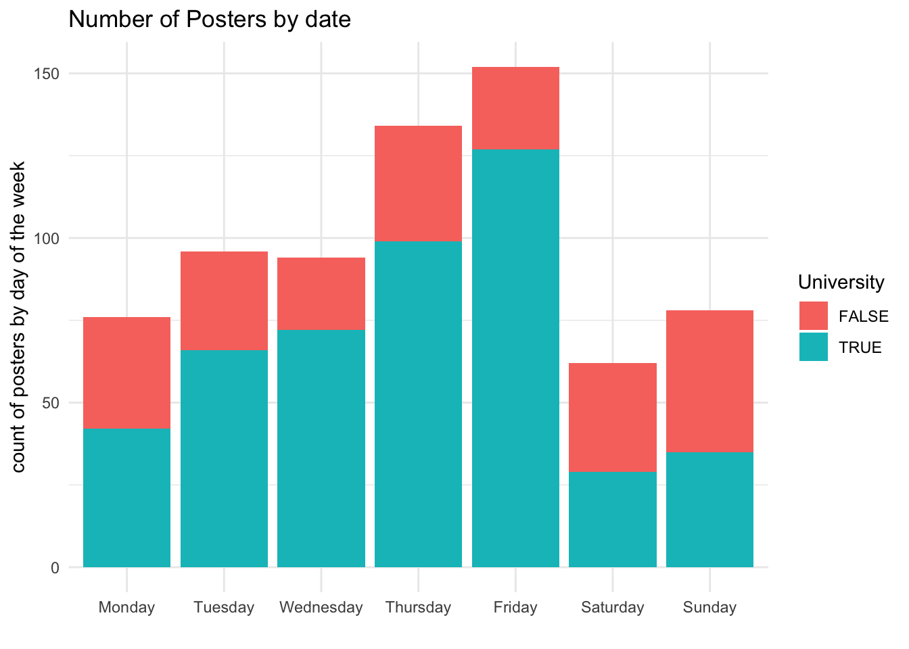

Chapter 4 Results
4.1 Poster data Exploratory Analysis
Most submitters declared their gender identity as women, and only 1/4 of submitters declared their identity as male. It is hard to pin down the cause of this discrepancy without more data, but some interesting hypothesis can be formed: are Chinese women more radicalized from the #Metoo movement and are more empowered to take political action? Is there a gender bias in @northern_square’s follower base, which is the primary distribution source of the survey?
The vast majority of the posters we collected directly reference the Sitong Bridge message (522 out of 692). More than half of the posters directly calls on Xi Jinping and end of his regime.
Most participants shared a picture of a poster, but some expressed their creativity via graffiti, chalk art, or wrote hand-written messages.
Even the dataset is only less than 700 entries, we can already observe the significant geographic spread of the movement. The largest number of posters came from the United States, followed up Canada, UK and Japan. This distribution largely coincides with the size of the Chinese diaspora presence in the country.
The geographic spread is corroborated by the diversity of languages that appear on the posters. Although almost all posters appear in non-Chinese speaking nations, Chinese is used in 2/3 of the posters, suggesting that the message is address both to a foreign audience as well as towards others in the diaspora.
Mapping the number of posters from early October to mid-November, we can see that the movement mobilizes within one or two days after major news events.
- After the 10/13 protest on Sitong Bridge, there is an almost immediate response, and daily poster counts reached its first peak within two days of the protest.
- The second peak is reached after the result of China’s Twentieth National Party Congress is revealed. The percentage of posters directly calling on Xi (line in blue) jumped from less than half to 70% of all submissions (line in red).
- The third peak happened after two large scale protests broke out in London and in New York.
Note that the third peak might also be a reflection of collection bias - @northern_square shared the Google form survey link on their instagram page on November 3rd, causing a larger inflex of submissions
Mapping the number of posters by day of the week, we observe that most entries are timestamped to Thursday and Friday, which deviates from the conventional wisdom that protest see better attendances over the weekend. The increase on Thursday and Friday can partially be explained by the increase of posters posted on University campus (blue), pointing to the possibility that most participants of the poster movements are students, who tend to push their “extracurriculars” to Thursdays and Fridays.
